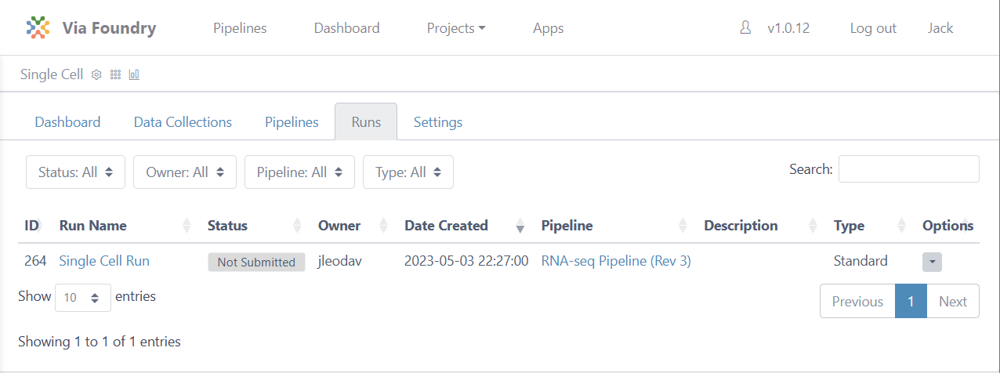

Project Guide
This guide will walk you through creating a project using the Via Foundry platform, and how to insert pipelines and files into it.
Creating Projects and Adding Pipelines
Projects are platforms to categorize all of your runs and files. To run a pipeline, you must add it into your project. There are two ways to create a new project and add pipelines to it:
- A. First, click the "Projects" button in the top of the screen. From the dropdown menu, you can create a new project by clicking
Add a New Project. After saving the name of the project, it will be added to your Projects table, which is accessible from the dropdown menu, as shown in the image below:
Note: You can always edit or remove your projects by clicking on the project name from the dropdown menu, navigating to the
Settingstab, and clicking theEditorDelete Projecticon. :::Now you are able to enter the project page by clicking the name of the project from the
Projectsdropdown menu. You will notice five tabs in the project page:
- Dashboard: Your project's homepage. The dashboard contains the
Descriptionbox, where you can write down information about the project; and theAnalysissection, which will contain reports on the project and its runs.- Data Collections: The hub of whatever data you need to add in order to run your desired pipelines. Add data by clicking the
Add Collectionbutton.- Pipelines: The pipeline(s) you want available for your project. Click
Create PipelineorAdd Pipelineto customize your project's pipeline environment.- Runs: Table containing information about all the runs conducted in your current project (see image below). You can enter a specific run's page by clicking on the name of the run.
Settings: Information about your project: name, creator, and date/time created. From this tab, you can edit or delete a given project, as mentioned above.

B. You can also create a project by clicking the
Pipelinesbutton on the top left of the page. Select the pipeline you want to run by clicking on it. At the top right of the new pipeline page, you'll see aRunbutton; press this to initiate a run.The
Runbutton opens a new window where you can create a new project by clickingCreate a Project. After entering and saving the project name, it will be added to your project list. From here, you can select your project by clicking on it, as shown in the image below.
You can proceed by entering the run name, which will subsequently be added to your project's run list. Clicking
Save Runwill redirect you to the "Run Page", where you can initiate your run.


Support
For any questions or help, please reach out to support@viascientific.com with your name and question.